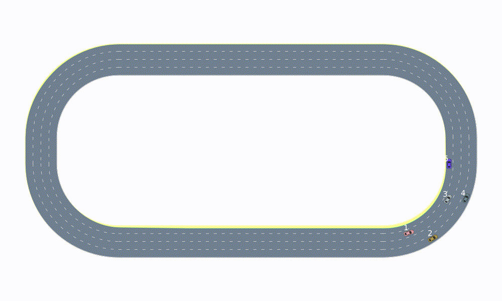
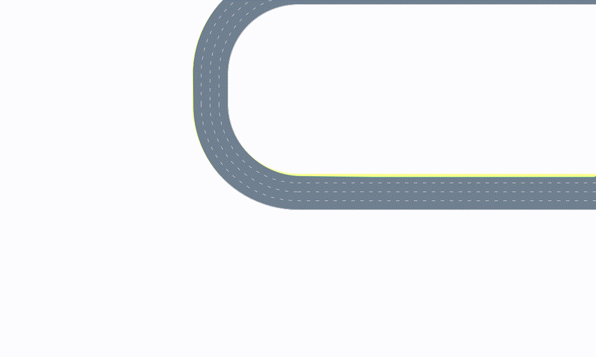
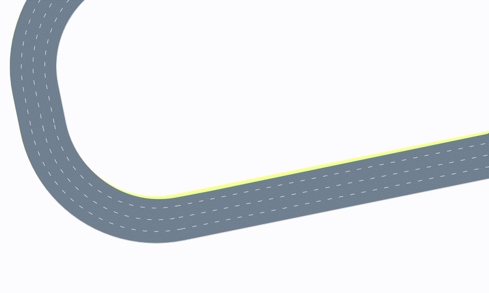
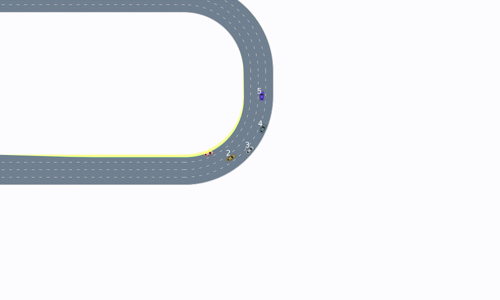
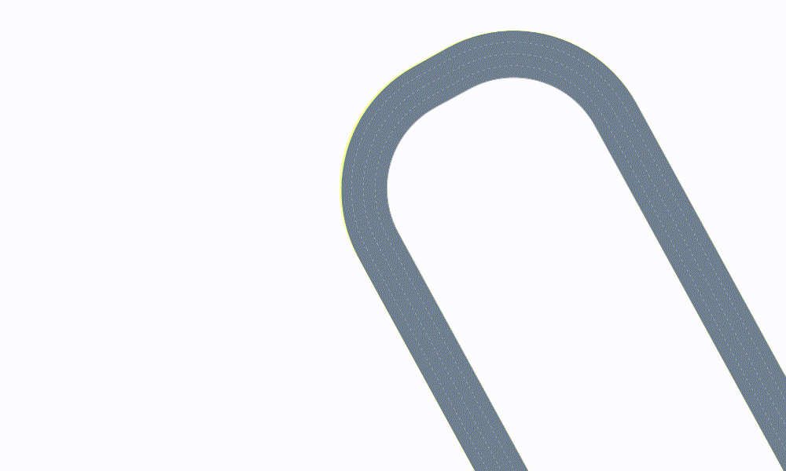

Cameras

In this section, we will showcase the cameras that are supported by AutoViz.jl.
All cameras make use of the CameraState object to represent the internal camera state.
Missing docstring for CameraState. Check Documenter's build log for details.
The following camera types are supported by AutoViz: StaticCamera, TargetFollowCamera, SceneFollowCamera, ZoomingCamera, ComposedCamera. The keyword arguments accepted by the CameraState object can also be passed to the constructors of these cameras, and they will be forwarded to the internal camera state. Now, we will show how the different cameras behave based on the simple stadium example.
First, we prepare a sequence of scenes visualize
using AutomotiveDrivingModels
using AutoViz
nlanes = 4
nveh = 5
nticks = 100
timestep = 0.1
roadway = gen_stadium_roadway(nlanes)
scene = Frame([Entity(VehicleState(
Frenet(roadway[LaneTag(1,rand(1:nlanes))], 10.0*i), roadway, 4.0 + 2.0rand()
), VehicleDef(), i) for i in 1:nveh])
models = Dict((
i => LatLonSeparableDriver(ProportionalLaneTracker(), IntelligentDriverModel())
for i in 1:nveh
))
set_desired_speed!.(values(models), 8.0 .+ 4.0rand(nveh))
scenes = simulate(scene, roadway, models, nticks, timestep)The following helper function takes care of generating an animation from a sequence of scenes, using a given camera. Note that for camera=nothing, the render function attempts to fit all the renderable objects on the canvas.
using Reel
function animate(roadway, scenes, camera=nothing)
animation = roll(fps=1.0/timestep, duration=nticks*timestep) do t, dt
i = Int(floor(t/dt)) + 1
update_camera!(camera, scenes[i])
renderables = [
roadway, scenes[i],
RenderableOverlay(IDOverlay(x_off=-2, y_off=1), scenes[i], roadway),
]
render(renderables, camera=camera)
end
return animation
endThe call to update_camera!(camera, scenes[i]) is important as it allows the internal camera state to be updated based on the positions of the vehicles.
Default camera: fit to content
The default camera uses the render instructions that are stored inside the RenderModel in order to compute a bounding box which holds all renderable objects.
animation = animate(roadway, scenes);"stadium_cam_default.gif"
Note that some renderable objects (such as custom objects) may not be considered by the default fit to content camera when the bounding box is computed. Therefore, they may be cut off.
Static Camera
A static camera maintains its position, zoom and rotation. It is the only camera that doesn't change its state when calling update_camera!().
animation = animate(roadway, scenes, StaticCamera(zoom=5.))"stadium_cam_static_default.gif"
We can pass in zoom, position and rotation parameters in order to change the camera state.
animation = animate(
roadway, scenes,
StaticCamera(position=VecE2(20.,10.), rotation=.2, zoom=8.)
)"stadium_cam_static_custom.gif"
Target Follow Camera
In many applications, we are interested in tracking one particular vehicle. To do this, we can use a TargetFollowCamera which follows a vehicle with a given ID. Let's follow the vehicle with ID 3:
animation = animate(roadway, scenes, TargetFollowCamera(3, zoom=5.))"stadium_cam_target.gif"
Sometimes, it is desireable fix the x or y position of the camera. For example, we can use the TargetFollowCamera to track a vehicle horizontally (in x direction), while keeping the vertical position (y direction) fixed. To do this, we simply provide a fixed value for the corresponding keyword argument y.
animation = animate(roadway, scenes, TargetFollowCamera(3, zoom=10., y=40.))"stadium_cam_target_y.gif"
Scene Follow Camera
In contrast to the TargetFollowCamera, the SceneFollowCamera tracks the center of mass of all the vehicles in a scene. The padding parameter specifies how man metres of padding there should be around the vehicles in the scene
animation = animate(roadway, scenes, SceneFollowCamera(padding=4.))"stadium_cam_scene.gif"
If we desire to follow the scene, but fix the zoom level, we can do so by passing in the corresponding keyword argument zoom.
animation = animate(roadway, scenes, SceneFollowCamera(zoom=20.))"stadium_cam_scene_zoom.gif"
Zooming Camera
The zooming camera changes its zoom level by an increment dz anytime the update_camera!() function is called, until a zoom level of zoom_target is reached.
animation = animate(roadway, scenes, ZoomingCamera(zoom_target=20., dz=0.4, zoom=2.))"stadium_cam_zooming.gif"
Composed Camera
Finally, the ComposedCamera can be used to combine different camera behaviors. For example, one can use the TargetFollowCamera together with the ZoomingCamera in order to follow a vehicle and zoom in on it. The constructor of the CompostedCamera takes an array of cameras which are applied in the same sequence as they are provided in the array.
animation = animate(roadway, scenes, ComposedCamera([
TargetFollowCamera(3),
ZoomingCamera(zoom_target=25., dz=0.4, zoom=1.),
]))"stadium_cam_composed.gif"
Custom Camera
Finally, we will show how to build a custom camera. We will build a camera whose angle is always aligned with the axis of the target vehicle with ID target_id
mutable struct TargetRotateCamera{I} <: Camera
state::CameraState
target_id::I
end
TargetRotateCamera(target_id; kwargs...) = TargetRotateCamera(CameraState(;kwargs...), target_id)In the update_camera!() function, we need to set the camera rotation to be the same as the vehicle yaw angle
function AutoViz.update_camera!(camera::TargetRotateCamera{I}, scene::Frame{E}) where {I,E<:Entity}
target = get_by_id(scene, camera.target_id)
yaw = posg(target.state)[3]
set_camera!(camera.state, rotation=-yaw)
return camera.state
endFinally, we can use our custom camera just like the other cameras
animation = animate(roadway, scenes, TargetRotateCamera(3, zoom=5.))"stadium_cam_custom.gif"
Also, we can combine the camera with other cameras to our liking
animation = animate(roadway, scenes, ComposedCamera([
TargetFollowCamera(3),
TargetRotateCamera(3),
ZoomingCamera(zoom_target=25., dz=0.4, zoom=1.),
]))"stadium_cam_composed_custom.gif"
This page was generated using Literate.jl.